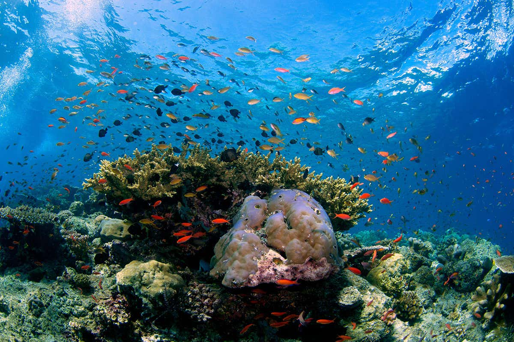

This week, we sat down with the brilliant Patrick Sieb from Investible's new $100 million Climate Tech Fund. In this edited conversation, Patrick discusses his mission to back early-stage decarbonisation startups, his perspectives on algae-tech, and some resources he's found inspiring on his journey so far.

I always wanted to work on climate, but the major transition and shift in focus came after reading the 20x IPCC report. That's when I started to read deeper into the topic, and I realised just how dramatic the situation was. I switched my attention completely at that point because I wanted to do something for my kids, and I realised that my expertise and passion for technology could be of great benefit to the sector.
The Investible Climate Tech Fund is a $100 million fund focused mainly on Asia-Pacific early stage investments. When it comes to investment criteria, we're looking to fund start-ups which make a climate positive impact. This means they need to directly or indirectly reduce emissions, or create adaptation benefits. Given our focus on the early stages of companies, diversification is key for our portfolio. As a result, we intend to invest in 60 companies which can solve problems in industry, transport, energy, food & agriculture, land & forest use, and buildings & cities.
Greenhouse is an exciting tender which investible won from the city of Sydney. It will be a dedicated workspace making up three floors in the Salesforce building, which will contribute towards the development of the climate tech community in Australia. This space will bring together researchers, specialists, corporates, tech companies, and investors hoping to decarbonise global operations. The most important element of this project is that it brings people together. It's hard to find talent in the tech industry, let alone in climate, so we really hope the hub will help connect passionate people.
It's certainly hard to generalise due to the varying types of businesses that are in this sector. However, the fundamentals of start-up success remain constant and it's paramount that teams master these. For example, it's absolutely critical that the founder and founding team have resilience, intelligence, and curiosity. In terms of the specific challenges facing climate-tech start-ups, capital intensive operations tend to be the biggest concern, and timing can be a concern.
When it come to capital raising, there are additional challenges. In a typical business, milestones are highlighted through revenues. However, in a deep-tech company the focus is more often on scientific milestones and any progression through regulatory barriers. Explaining your progression through these different milestones is the key to accessing investment. At Investible, we want to accelerate the time from seed to Series A. As a result, we help founders achieve their goals as quickly as possible without skipping any of these important steps.

I think it's a super exciting time and, most importantly, it’s not hype. I don't think this thematic of climate-tech is going to be at major risk from fluctuations in other areas like SPACs. There are some real fundamentals here including the fact we need solutions for climate right now. Plenty of people have realised this and there is an abundance of capital from corporates waiting to be invested.
I'm bullish on the front-end, where we're seeing many more individuals innovating. Now it's all about scaling, getting people on the right path, and helping founders grow these startups to the point bigger investors will deploy hundreds of millions of dollars.
I've seen quite a number of companies looking to either grow seaweed or use seaweed-derived products. As a thematic, it's a super interesting space with a lot of potential. Some particularly impressive facets include its dramatically fast growth rate, and how it can be used to replace certain fossil fuel derived products like plastics. It’s quite clearly an underutilised resource.

I think a lot of people go into climate unsure of how to approach such a big problem. One of the resources I found useful is a podcast called "My Climate Journey" which showcases how someone from an unrelated domain can figure things out in the space. When it comes down to it, strive to do what you really enjoy, and what you're good at. Then try to apply these things to climate topics. You don't have to be a deep-tech science whizz to make a difference. Using your skills in the right way can be critical.
Another resource I just finished is called "Speed & Scale", which is awesome.This book provides a broad overview of the space and it's interesting to hear from somebody who was there during clean tech 1.0. Nevertheless, it's important to note that you don't even have to read much if you want to make a difference in this space. At the very least, research the fundamentals, and try to focus your energy on higher impact projects.
Interviewer: Peter Green